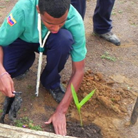

El Clan de Rovers
Es una Unidad para los y las jóvenes. Comienza al término de la pubertad y va de los 16 a los 21 años. Aquí se perfecciona la labor formativa realizada en las etapas anteriores y completa el proceso educativo Scout.
La Unidad de Rovers se denomina; Clan y se compone de individuos libremente asociados; dentro de los clanes se conforman Equipos temporales a partir de proyectos de servicio, exploración, investigación, etc.
El espacio formal de toma de decisiones que afectan a toda la sección es la Asamblea, en la misma se deciden los proyectos que pueden ser: de un solo equipo, o de todo el Clan Rover (llevada a cabo en equipo, claro).
El acento está puesto en:
- El actuar autónoma y responsablemente junto a otros.
- La participación comprometida y solidaria en el mundo adulto.
- Un proyecto de vida.